Masa, tortilla y comal
El maiz como centro de la mesa y gesto artesanal.
Cocina ancestral oaxaquena
Sabores de raiz, maiz y fuego servidos con elegancia serena en una casa calida para comer sin prisa.
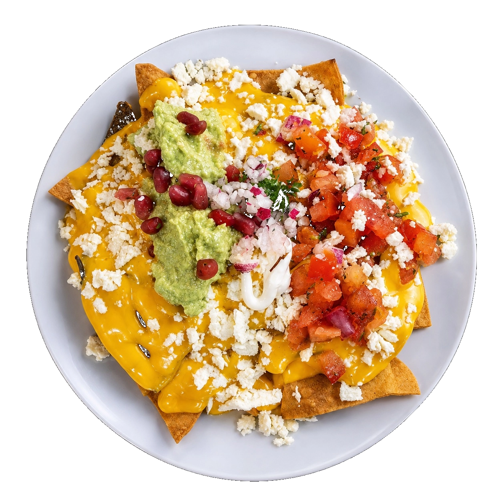
Tortilla artesana, alma mexicana, manos expertas. Prueba lo hecho por quién mejor conoce el sabor de su tierra.
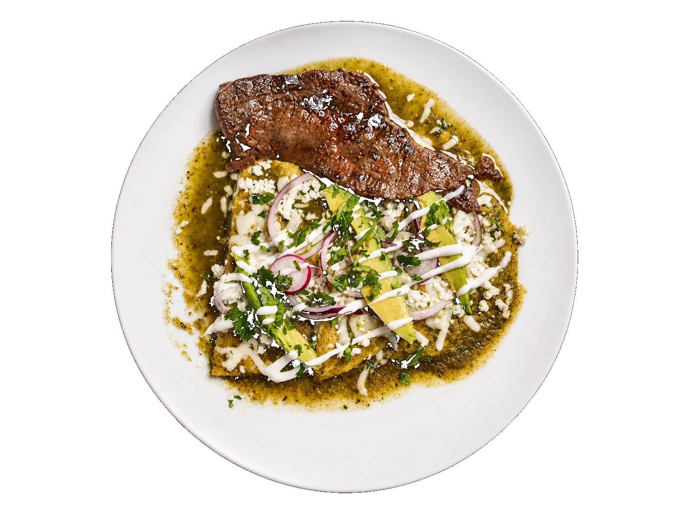
Chilaquiles verdes con carne asada.
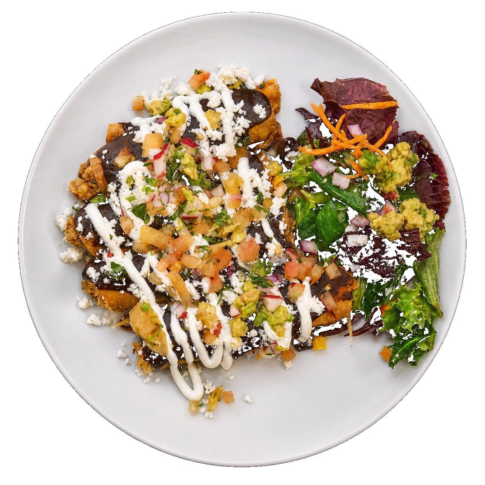
Chilaquiles con mole negro
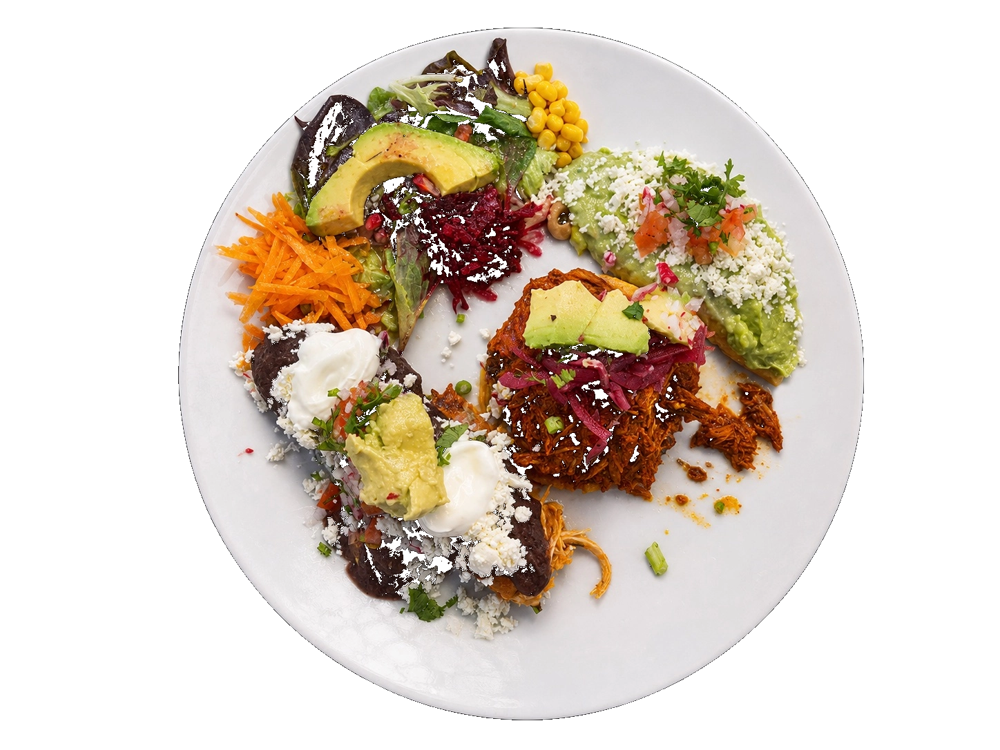
Enchiladas y tostada de tinga
Espacio
La experiencia combina muros con memoria, mesas sencillas, vegetacion y luz ambar. El interior mantiene una sensacion artesanal sin perder el pulso refinado de la marca.
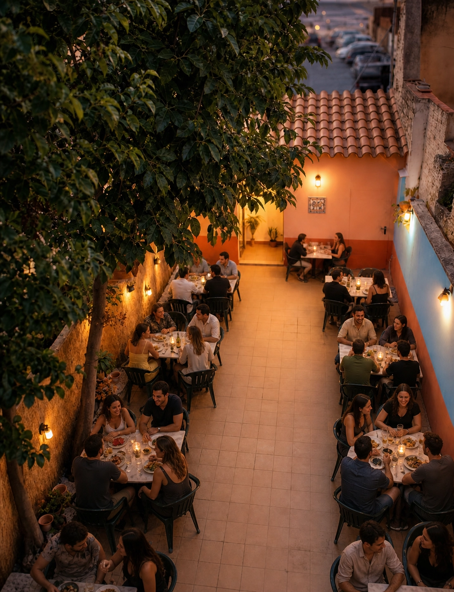
Sabores
Mole, maiz, salsas, hierbas frescas y postres de casa aparecen en una cocina de profundidad, no de artificio.
El maiz como centro de la mesa y gesto artesanal.
Calor medido, acidez viva y fondos profundos.
Recetas familiares con final limpio y elegante.
Platos
Una galeria pensada para crecer con fotografias reales de la cocina: primeros planos calidos, fondos sobrios y platos que dejen hablar al producto.
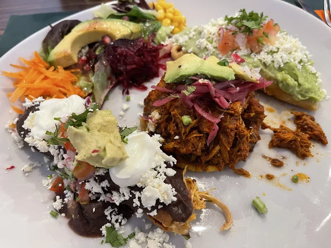
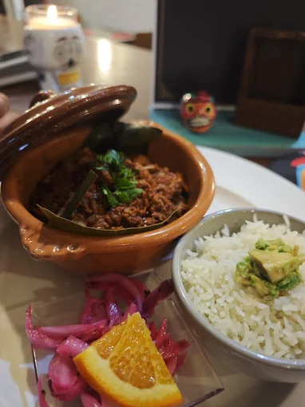
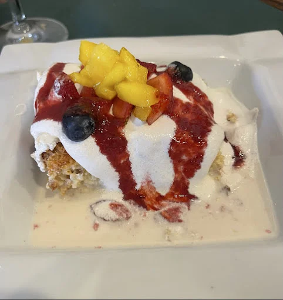
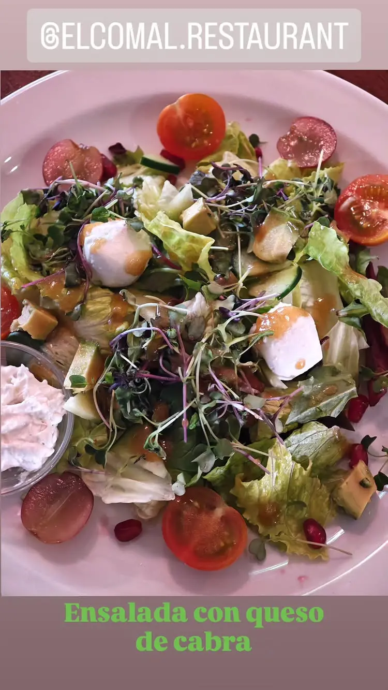
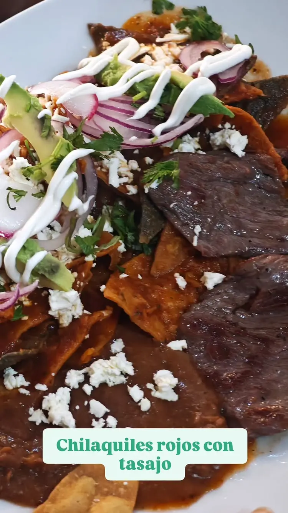
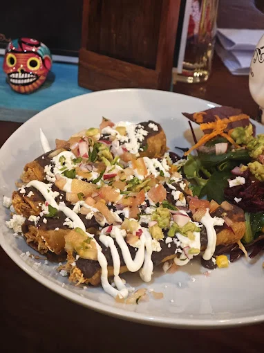
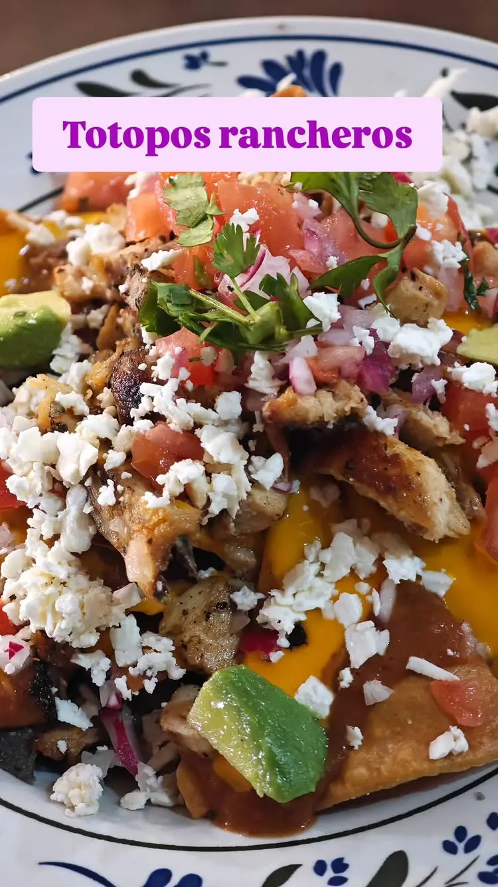
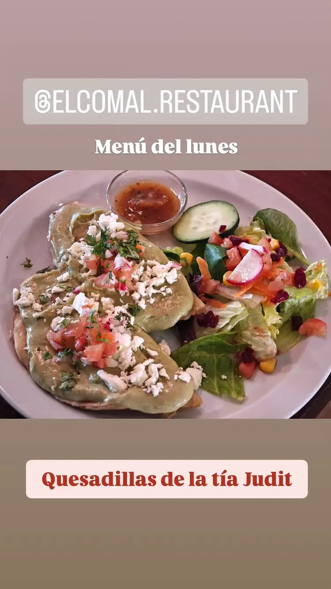
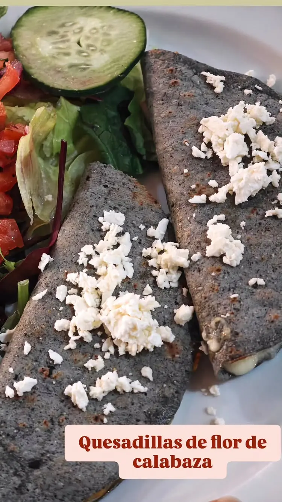
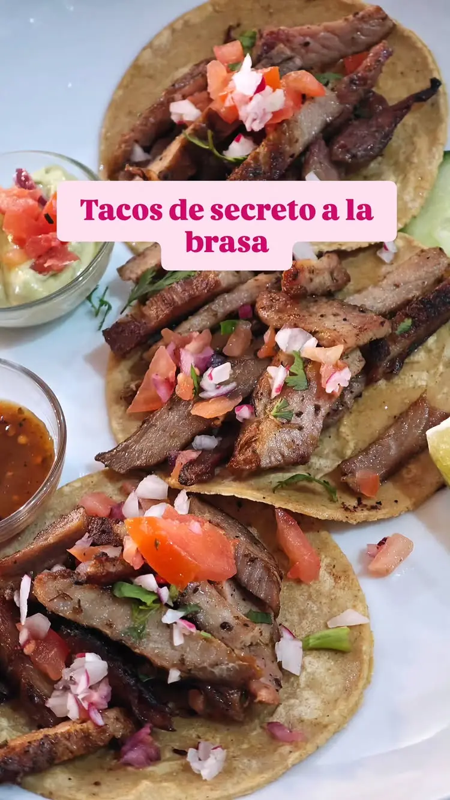
"Comida mexicana auténtica. Los tacos al pastor y los chilaquiles son increíbles. El trato es maravilloso y el local muy acogedor."
Maria G."Sin duda el mejor restaurante mexicano de la zona. Los sabores te transportan directamente a México. Recomendable 100%."
Carlos R."Excelente servicio y comida deliciosa. Probamos el mole y las margaritas, todo espectacular. Repetiremos seguro."
Laura M.Reservas
Contacto
Lunes, jueves, viernes, sabado y domingo
13:00 - 16:00 / 20:00 - 23:00Martes y miercoles cerrado